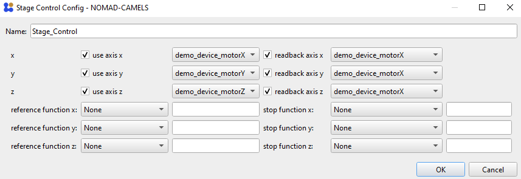

Using Manual Controls
Manual Control functionality allows you to set individual instrument channels (e.g. stage in x direction or a voltage output of a SMU)
1. Add Manual Control
To start click the ➕ symbol next to Manual Control. You can now select which type of manual control you want to add. The options depend on the instruments you have installed. The most basic manual control is the Stage_Control which sets individual channels. It is mainly designed for motorized stages but can be used to control most instruments.
2. Configure Manual Control
Select which axis the manual control should use. You must also select from which channel it should read the position (readback axis) . This is often the same channel as the use axis.

Click OK and start the manual control.

This opens the stage control.

Here you can set the step size and use the green arrow keys to control the selected axis. You can also jump to a specific value by entering values below the Go To button and then pressing the button.
⚠ The value of
Time between readingsis the time in seconds after which the axis is read (using the setreadback axischannel).